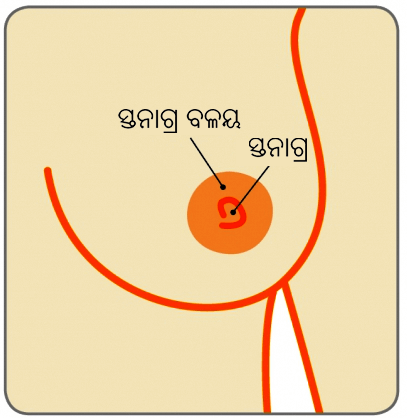

ସ୍ତନ

ଜଣେ 62 ବର୍ଷିୟ ବୃଦ୍ଧ ମହିଳା ପ୍ରତିମା (ପରିବର୍ତ୍ତିତ ନାମ) ନିଜର ତିନିମାସର ଅବଧି ମଧ୍ୟରେ ଡାହାଣ ପଟ ସ୍ତନରେ ଏକ ଗଣ୍ଠି ଚିହ୍ନଟ କରିଥିଲେ। ଏହି ତିନୋଟି ମୂଲ୍ୟାଙ୍କନ ପ୍ରକ୍ରିୟା ପରେ, ତାଙ୍କୁ ସ୍ତନ କର୍କଟ ହୋଇଥିବାର ଜଣାପଡିଥିଲା।
ସ୍ତନ
ନିପଲ୍

ସ୍ତନ କର୍କଟ କ’ଣ ଏବଂ ଏହା କେଉଁଠାରେ ଆରମ୍ଭ ହୋଇଥାଏ?
ସ୍ତନ ଟିସୁ ଗୁଡିକ ଡକ୍ଟସ୍ ଏବଂ ଲୋବ୍ୟୁଲ୍ସ୍ ଗୁଡିକରେ ପ୍ରସ୍ତୁତ ହୋଇଥାଏ। ସେତେବେଳେ ସ୍ତନ କର୍କଟ ସୃଷ୍ଟି ହୁଏ ଯେତେବେଳେ ଏକ ସିଙ୍ଗଲ୍ ସେଲ୍ ସ୍ତନ ଭିତରେ ବିଭକ୍ତ ହୁଏ ଏବଂ ଏକ ଅସାମାନ୍ୟ ଭାବରେ ବଢିବାକୁ ଆରମ୍ଭ କରିଥାଏ।
ସେଠାରେ ବିଭିନ୍ନ ପ୍ରକାରର ସ୍ତନ କ୍ୟାନସର୍ ରହିଛି- କାର୍ସିନୋମା ନାମରେ ମଧ୍ୟ ଜଣାଶୁଣା। ମୋଟାମୋଟି ଭାବେ, ସ୍ତନ କର୍କଟ ଡକ୍ଟାଲ୍ କାର୍ସିନୋମା (ସାଧାରଣତଃ ସ୍ତନ କର୍କଟରୁ ଆସିଥାଏ) ରୂପେ ସୂଚିତ ହୋଇଥିବା ଡକ୍ଟସ୍ ଗୁଡିକରୁ ଆସିଥାଏ ଏବଂ ଲୋବୁଲାର୍ କାର୍ସିନୋମାକୁ ସୂଚାଉଥିବା ଲୋବ୍ୟୁଲ୍ସ୍ ରୁ କ୍ୟାନସର୍ ଆସିଥାଏ।
ଏହା ଗୁରୁତ୍ତ୍ୱପୂର୍ଣ୍ଣ ଯେ ଡାକ୍ତରମାନେ ସଠିକ୍ ଭାବେ ଡାଇୟାଗ୍ନୋସିସ୍ କରନ୍ତୁ ଯେପରିକି ସେମାନେ ବ୍ୟକ୍ତି ପାଇଁ ଉତ୍ତମ ତଥା ସଠିକ୍ ଉପଚାର ଯୋଜନା କରିପାରିବେ
ସ୍ତନ କର୍କଟ କିପରି ସାଧାରଣ ଅଟେ?
ସ୍ତନ କର୍କଟ ସମଗ୍ର ବିଶ୍ୱ ସ୍ତରରେ ମହିଳା ମାନଙ୍କୁ ପ୍ରଭାବିତ କରିଥିବା କର୍କଟ ରୋଗ ଅଟେ। ପ୍ରତିବର୍ଷ 150, 000 ନୂଆ ରୋଗ ଡାଇୟାଗ୍ନୋସିସ୍ କରାଯାଇଥାଏ, ଭାରତରେ ମହିଳା ମାନଙ୍କ ଉପରେ ପ୍ରଭାବ ପକାଉଥିବା ସାଧାରଣ କ୍ୟାନ୍ସର୍ ଭିତରେ ଗର୍ଭାଶୟ କ୍ୟାନସର୍ ଠାରୁ ସ୍ତନ କର୍କଟ ରୋଗ ଆଗକୁ ବଢିଗଲାଣି।

ସ୍ତନ କର୍କଟ କିପରି ଡାଇୟାଗ୍ନୋସିସ୍ ହୋଇଥାଏ?
ଏହି ତିନୋଟି ମୂଲ୍ୟାଙ୍କନ ପ୍ରକ୍ରିୟା ଦ୍ୱାରା ନିର୍ଦ୍ଧାରଣ ପରେ, ଯାହାକି କ୍ଲିନିକାଲ୍ ସ୍ତନ ପରୀକ୍ଷାରେ ଜଡିତ, ସ୍ତନ ପ୍ରତିଛବି କରିବା (ମାମୋଗ୍ରାମ୍, ଉଦା ସ୍ତନର ଏକ୍ସ୍-ରେ ଏବଂ ସ୍ତନ ଅଲ୍ଟ୍ରାସାଉଣ୍ଡ ସ୍କାନ୍) ଏବଂ ଗଣ୍ଠି ଟିର ଅଲ୍ଟ୍ରାସାଉଣ୍ଡ ନିଦ୍ଦେର୍ଶିତ କୋର୍ ନିଡିଲ୍ ବାଏୟୋପ୍ସି, ଏହିପରି ସ୍ତନ କର୍କଟର ଏକ ନିଶ୍ଚିତ ଡାଇୟାଗ୍ନୋସିସ୍ ବହୁତ କ୍ଷେତ୍ରରେ ପ୍ରାପ୍ତ କରାଯାଇପାରେ
ପ୍ରତ୍ୟେକଟି ସ୍ତନ ଗଣ୍ଠି ପାଇଁ ଏହି ତିନୋଟି ମୂଲ୍ୟାଙ୍କନ ପ୍ରକ୍ରିୟାର ନିର୍ଦ୍ଧାରଣ ଆବଶ୍ୟକ ଅଟେ କି?
ହଁ। ତିନୋଟି ମୂଲ୍ୟାଙ୍କନ (କ୍ଲିନିକାଲ୍ ସ୍ତନ ପରୀକ୍ଷା, ସ୍ତନ ପ୍ରତିଛବି କରିବା ଏବଂ ସ୍ତନର ଏକ୍ସ୍-ରେ ଏବଂ ସ୍ତନ ଅଲ୍ଟ୍ରାସାଉଣ୍ଡ ସ୍କାନ୍ ଏବଂ ଅଲ୍ଟ୍ରାସାଉଣ୍ଡ ନିଦ୍ଦେର୍ଶିତ କୋର୍ ନିଡିଲ୍ ବାଇଓପ୍ସି) ସଠିକ୍ଭାବେ ସାମିଲ୍ନ’ଥାଏ କିମ୍ବା ବାସ୍ତବରେ ଅଧିକାଂଶ ପରିସ୍ଥିତିରେ ସ୍ତନ କର୍କଟର ପୃଷ୍ଟି କରିଥାଏ, ଏହି ପ୍ରକାରରେ ଗୋଟିଏ ଡାଇୟାଗ୍ନୋସିସ୍ ପ୍ରାପ୍ତ କରିବା ପାଇଁ ଏକ ଖୋଲା ସର୍ଜରୀକୁ ଜଣେ ମହିଳାଙ୍କ ପାଇଁ ଆବଶ୍ୟକୀୟ ମାନିଥା’ନ୍ତି।

କର୍କଟର ସ୍ତର ଏବଂ ଗ୍ରେଡ୍ ମଧ୍ୟରେ କ’ଣ ବିଭିନ୍ନତା ରହିଛି?
ସ୍ତନ କର୍କଟର ଡାଇୟାଗ୍ନୋସିସ୍ ସ୍ୱତଃସ୍ପୃତ ଭାବେ ଏହା ହୋଇଛି କିମ୍ବା ବଢିବକି ନାହିଁ ଚିହ୍ନାଇବାର ଅର୍ଥକୁ ବୁଝାଏ ନାହିଁ; କେବଳ ଏତିକିକି ଏହା ସମ୍ଭାବିତ ପ୍ରସାର କରିଥାଏ। କର୍କଟ ପାଇଁ ଏହି ସମ୍ଭାବିତ ପ୍ରସାର କର୍କଟର ଗ୍ରେଡ୍ କୁ ବଢିବାର ସୂଚିତ କରିଥାଏ। ଏହି ସ୍ତନ କର୍କଟ 1,2 କିମ୍ବା 3 ଭାବେ ଗ୍ରେଡ୍ କରାଯାଏ। ସାଧାରଣ ଭାବେ ଏକ ନିମ୍ନତ୍ତର ଗ୍ରେଡ୍ (ଗ୍ରେଡ୍ 1) ଧିରେ ଧିରେ ବୃଦ୍ଧି ହେଉଥିବା କର୍କଟକୁ ସୂଚାଏ ଯେତେବେଳେ କର୍କଟ ଉଚ୍ଚତ୍ତର ଗ୍ରେଡ୍ (ଗ୍ରେଡ୍ଡ 3) ଦୃତ ଭାବେ ବୃଦ୍ଧି ହେଉଥିବାର ସୂଚିତ କରେ।
କର୍କଟ ରୋଗର ବୃଦ୍ଧି ଶେଷ ସୀମା ଏହି ରୋଗର ମୂଳ ସ୍ତର ରୂପେ ଜଣା ଯାଇଥାଏ।
ସ୍ତର 1: ଟ୍ୟୁମର୍ ଟି 2 ସେ.ମି ରୁ କମ୍ ବ୍ୟାପି ନ’ଥିବ
ସ୍ତର 2 : ଟ୍ୟୁମର୍ 2-5 ସେ.ମି. ସହିତ କିମ୍ବା ଲିମ୍ଫ୍ ନୋଡ୍ ଜଡିନ ନ’ହୋଇଥିବ। ଶରୀରର ଅନ୍ୟ ଅଂଶଗୁଡିକୁ ବ୍ୟାପିନ’ଥିବ
ସ୍ତର 3: ଟ୍ୟୁମର୍ 5 ସେ.ମି.ରୁ ଅଧିକ କିମ୍ବା ଯେକୌଣସି ଆକାରର କିନ୍ତୁ ଟ୍ୟୁମର୍ ହୁଏତ ତାହା ଛାତି ଉପରକୁ, ମାଂସପେଶୀକୁ କିମ୍ବା ଚମଡାକୁ ଜଡିତ ଥିବ।
ସ୍ତର 4 : ଟ୍ୟୁମର୍ ଯେକୌଣସି ଆକାରର, ଲିମ୍ଫ୍ ନୋଡ୍ ଜଡିତ କିମ୍ବା ଜଡିତ ହୋଇନଥିବ କିନ୍ତୁ କର୍କଟ ଶରୀର ଅନ୍ୟ ଅଂଶକୁ ବ୍ୟାପିଯାଇଥିବ।
(ଉତ୍ସ: କର୍କଟ ବିରୁଦ୍ଧରେ ଅନ୍ତରାଷ୍ଟିୟ ୟୁନିୟନ୍ - ୟୁଆଇସିସି)
ଅମ୍ରିଥା (ନାମ ପରିବର୍ତ୍ତିତ), ଜଣେ 60 ବର୍ଷ ବୃଦ୍ଧା ମହିଳା ଡାଇୟାଗ୍ନୋସିସ୍ ହୋଇଥିବା ସହିତ ସ୍ତନ କର୍କଟ ଉପରେ ଆଶ୍ଚର୍ଯ୍ୟ ପ୍ରକାଶ କରିଥିଲେ ତାଙ୍କର ଫଳାଫଳ ଉତ୍ତମ ହୋଇପାରିବ ଯଦି ତାଙ୍କୁ ଏକ ବିଶେଷଜ୍ଞ କେନ୍ଦ୍ରରେ ଉପଚାର କରିବାକୁ ପଡେ
ବିଶେଷଜ୍ଞ ସ୍ତନ କେନ୍ଦ୍ରଗୁଡିକ ସ୍ତନ କର୍କଟ କେୟାର୍ ବିକାଶ କରେ କି?
ଏହା ଏକ ଉତ୍ତମ ଭାବେ ପରିଚିତ ତଥ୍ୟ ଅଟେ ଯାହାକୁ ସ୍ତନ କର୍କଟ ପାଇଁ ଉତ୍ତମ ଫଳାଫଳ ପ୍ରାପ୍ତ କରାଯାଇପାରେ ଯଦି ଏକ ଘୋଷଣା କରାଯାଇଥିବା ଆଗ୍ରହ କିମ୍ବା ସ୍ତନ ରୋଗରେ ପ୍ରଶିକ୍ଷଣ ସହିତ ବିଶେଷଜ୍ଞ ମାନେ ସମର୍ପିତ ବ୍ୟାପକ ସ୍ତନକେନ୍ଦ୍ର ଗୁଡିକରେ ଏହି ରୋଗ ଗୁଡିକର ପ୍ରବନ୍ଧନ କରିଛନ୍ତି।
ସ୍ତନ କର୍କଟ ଉପଚାରର ଉଦ୍ଦେଶ୍ୟ କ’ଣ?
ସ୍ତନରୁ କର୍କଟ ହୋଇଥିବା କ୍ଷେତ୍ରକୁ ଏବଂ ବାହୁ ପିଟ୍ରେ ଥିବା ଯେକୌଣସି ପ୍ରଭାବିତ ଲିମ୍ଫ୍ ନୋଡ୍ ଗୁଡିକୁ ଅପସାରଣ କରିବା
ରକ୍ତ କୋଷିକା କିମ୍ବା ଏହି ଲିମ୍ଫାଟିକ୍ ପ୍ରଣାଳୀ ଜରିଆରେ ଶରୀର ଭିତରକୁ ସ୍ତନଠାରୁ ଆଗରୁ ବ୍ୟାପିଯାଇଥିବା କର୍କଟ କରୁଥିବା ସେଲ୍ଗୁଡିକୁ ନଷ୍ଟ କରିଦେବା।
ସ୍ତନ କର୍କଟ ଉପଚାର ପାଇଁ କେଉଁ ପ୍ରକାରର ସାଧନ ଗୁଡିକର ଉପଲବ୍ଧ ରହିଛି?
ଏଠାରେ ସ୍ତନ କର୍କଟ ଉପଚାର ପାଇଁ ଚାରି ପ୍ରକାରର ସାଧନ ରହିଅଛି।
ଏହା ଗୁରୁତ୍ତ୍ୱପୂର୍ଣ୍ଣ ଭାବେ ମନେ ରଖିବାକୁ ହେବ ଯେ, ସମସ୍ତ ରୋଗୀମାନଙ୍କୁ କେମୋଥେରାପି, ରାଡିଓଥେରାପି ଏବଂ ହର୍ମୋନ୍ ଥେରାପିର ଆବଶ୍ୟକତା ନ’ଥାଏ
ଏହି ସ୍ତନ କର୍କଟ କେଉଁଠାରେ ବ୍ୟାପିଥାଏ?
ଏହାର ଆକର, ଗ୍ରେଡ୍ ଏବଂ ଲିମ୍ଫ୍ ନୋଡ୍ ଜଡିତ ଉପରେ ନିର୍ଭର କରେ, ଯଦି କର୍କଟ ବ୍ୟାପିଯାଇଛି ଷ୍ଟାଗିଂ ପରୀକ୍ଷଣର ଆକଳନ କରିବାକୁ କରାଯାଏ। କର୍କଟ ସମ୍ଭାବିତ ଭାବେ ଚାରୋଟି କ୍ଷେତ୍ରକୁ ବ୍ୟାପିଥାଏ – ଲିଭର୍, ଯକୃତ, ବ୍ରେନ୍ ଏବଂ ଅସ୍ଥି। ଯଦି କର୍କଟ ଉପରୋକ୍ତ ଦର୍ଶାଯାଇଥିବା କ୍ଷେତ୍ରରେ ବ୍ୟାପିଥାଏ ଏହି ଷ୍ଟାଗିଂ ପରୀକ୍ଷଣକୁ ଆକଳନ କରାଯାଏ।
ଏହି ସ୍ତନ କର୍କଟ ଉପଚାରରେ ପରାମର୍ଶ କାହିଁକି ଗୁରୁତ୍ତ୍ୱପୂର୍ଣ୍ଣ ଅଟେ?
ଏକ ରୋଗୀ ପାଇଁ ଏବଂ ସେମାନଙ୍କର ସମ୍ପର୍କିୟ ମାନଙ୍କୁ ଉତ୍ତମରୂପେ ସୂଚିତ କରିବାକୁ, ଉତ୍ତମ ଭାବେ ପ୍ରସ୍ତୁତ ହେବାକୁ ଏବଂ ଅଧିକ ଗୁରୁତ୍ତ୍ୱପୂର୍ଣ୍ଣତା, ସେମାନଙ୍କ ଚିତ୍କିସାର ପ୍ରତ୍ୟେକଟି ସ୍ତରରେ ନିୟନ୍ତ୍ରଣକୁ ଅନୁଭବ କରିବା ରୂପେ ପରାମର୍ଶ କରିବା ସ୍ତନ କର୍କଟ କେୟାର୍ର ଏକ ବହୁ ଗୁରୁତ୍ତ୍ୱପୂର୍ଣ୍ଣ ବିଷୟବସ୍ତୁ ଅଟେ।
ଏକ ସମର୍ଥିତ ଏବଂ ସକ୍ରିୟ ପରିବେଶ ଭିତରେ ଜଣେ ବିଶେଷଜ୍ଞଙ୍କ ଦ୍ୱାରା ଭାବେ ବିଭିନ୍ନ ଚିତ୍କିସା ବିକଳ୍ପଗୁଡିକ ଏବଂ ଏହି ଡାଇୟାଗ୍ନୋସିସ୍ ବିଷୟରେ ପରାମର୍ଶ ଆଲୋଚନା ଜଡିତ କରିଥାଏ। ସମାନ ଭାବେ, ରୋଗୀର ବ୍ୟକ୍ତିଗତ ଆବଶ୍ୟକତା ଗୁଡିକର ଯତ୍ନ ନେବା ସ୍ତନ କର୍କଟରେ ପ୍ରଭାବିତ ହୋଇଥିବା ସେମାନଙ୍କ ପରିବାରର ଯାହାକି ପରାମର୍ଶ କରିବା ପର୍ଯ୍ୟାୟର ସମୟରେ ପର୍ଯ୍ୟାପ୍ତ ମନୋବୈଜ୍ଞାନିକ ଏବଂ ଭାବାତ୍ମକ ସମର୍ଥନ ପ୍ରଦାନ କରିଥାଏ।
ସେମାନଙ୍କ ମଧ୍ୟରୁ ବିଶେଷଜ୍ଞଙ୍କୁ ପଚାରିବାକୁ ଚାହୁଁଥିବା ଏକ ସମ୍ଭାବିତ ପ୍ରଶ୍ନ କ’ଣ ହୋଇପାରେ?
ବିଭିନ୍ନ ଉପଚାର ବିକଳ୍ପଗୁଡିକରୁ ସମ୍ବଳିତ ବିଶେଷଜ୍ଞଙ୍କୁ ପ୍ରଶ୍ନ ପଚାରିବାକୁ ଜଣେ ଅକୁଣ୍ଠିତ ଉଠିପାରନ୍ତି। ସେମାନେ ଜଡିତ ହୋଇପାରନ୍ତି
ଏହି ଉତ୍ତମ ଚିତ୍କିସା ମୋ ପାଇଁ କାହିଁକି?
ସେଠାରେ କୌଣସି ବିକଳ୍ପ ଅଛି କି?
ସମ୍ଭାବିତ ପାର୍ଶ୍ୱ ପ୍ରତିକ୍ରିୟାଗୁଡିକ କ’ଣ?
ସେଗୁଡିକ କୌଣସି କ୍ଷୁଦ୍ର ଅବଧି ଏବଂ ଦୀର୍ଘ ଅବଧି ଜଟିଳତା ଅଟେ କି?
ଏହି ଉପଚାର ଗୁଡିକ ଦୈନନ୍ଦିନ ଜୀବନ ଉପରେ କିପରି ପ୍ରଭାବ ପକାଇବ?
ଏହା ବିଶେଷଜ୍ଞ ମାନଙ୍କୁ ନିଜରଏକ ଧୈର୍ଯ୍ୟପୂର୍ଣ୍ଣ ଢଙ୍ଗରେ ଉତ୍ପନ୍ନ କରିବା ପ୍ରଶ୍ନଟିକୁ ସ୍ପଷ୍ଟ କରିବାର କର୍ତ୍ତବ୍ୟ ଅଟେ। ଉପାୟକ୍ରମେ, ପ୍ରଶିକ୍ଷିତ ସ୍ତନ କେୟାର୍ କାଉନ୍ସେଲର୍ ଏକ ସଅରଳ ସହଜ ଭାବେ ବୁଝିପାରୁଥିବା ଭାଷାରେ ବିଶେଷଜ୍ଞଙ୍କ ଦ୍ୱାରା ହାଇଲାଇଟ୍ ହୋଇଥିବା ପଏଣ୍ଟ ଗୁଡିକୁ ସୁଦୃଢ କରିବାକୁ ଉପଲବ୍ଧ ହେବେ। ଏହି ସ୍ତନ କେୟାର୍ କାଉନ୍ସେଲର୍ ଡାକ୍ତରଖାନା ଠାରୁ ଡିସ୍ଚାର୍ଜ ଅନୁସରଣ କରି ଯେକୌଣସି ଜଣାଶୁଣା ଠିକଣାକୁ ରୋଗୀର ଗୃହରପରି ସୁଖ ସୁବିଧା ପାଇଁ କେୟାର୍ ବଢାଇବାକୁ ସକ୍ଷମ ହେବେ।